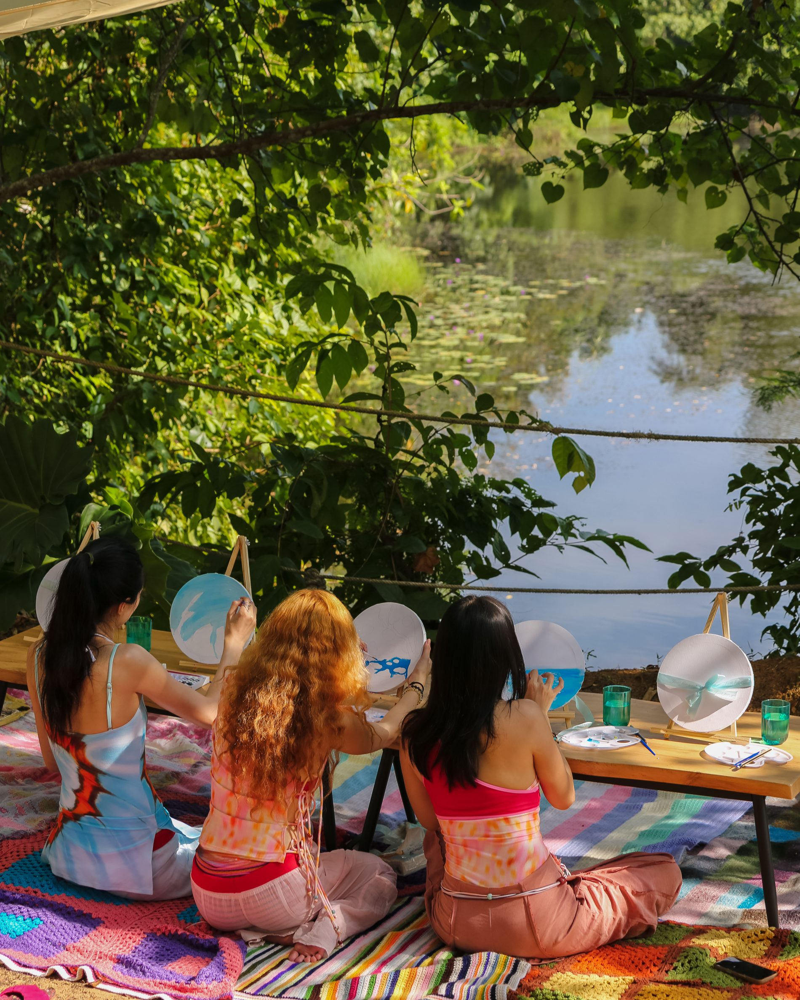
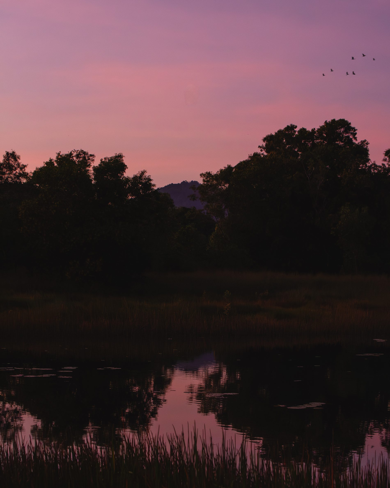
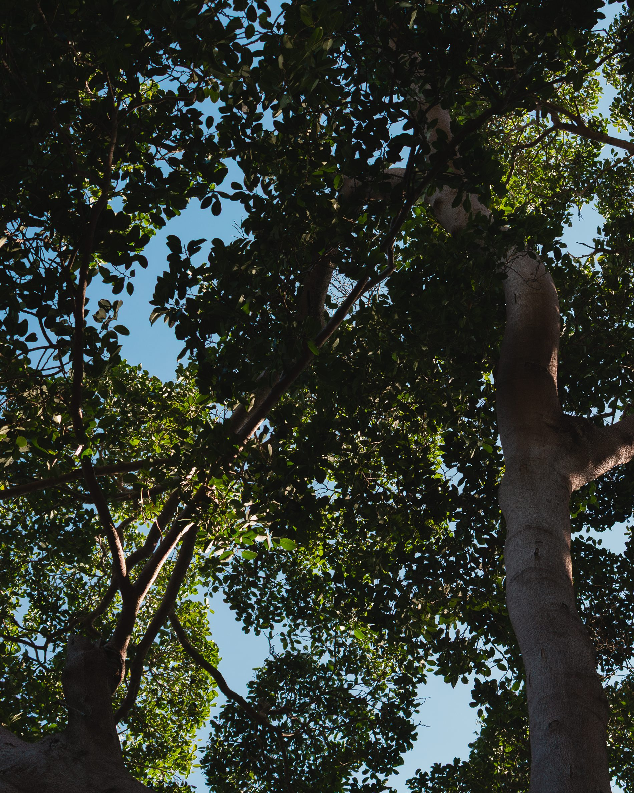
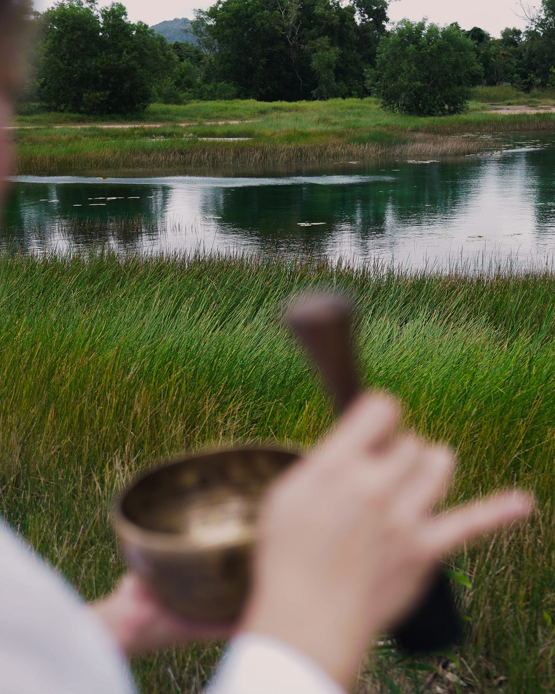
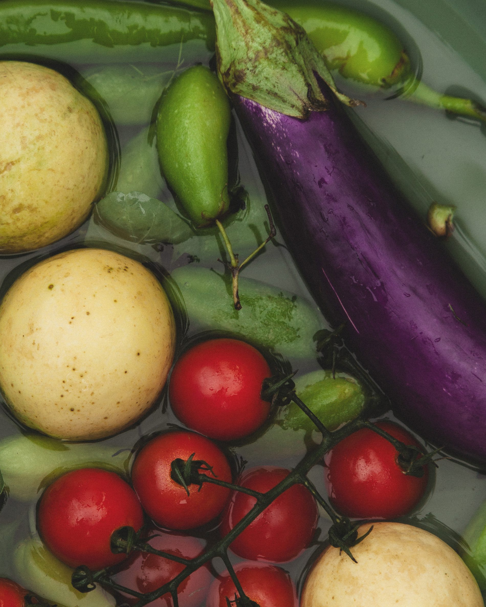
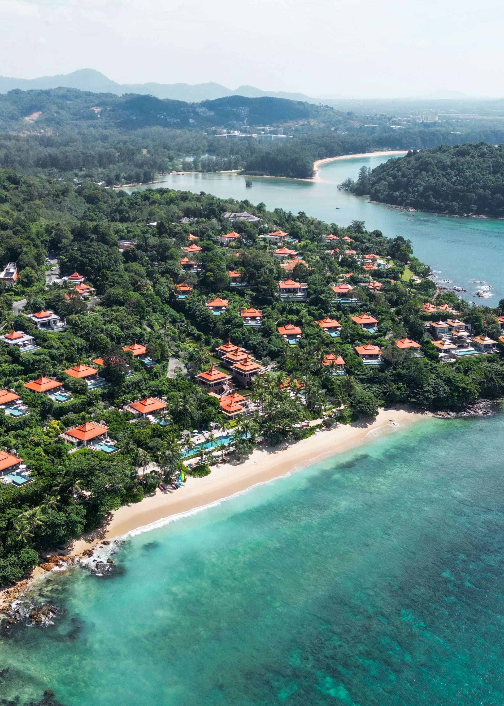

I
Explore & Create
Little Garden
A creative studio in the open air, not a kids' club. Hands in clay, paint by the water, small discoveries that children remember for a lifetime.

A place where children explore and create, parents return to themselves, and beauty, wellbeing and human connection are discovered in the rhythm of an unhurried day. Living well begins together.
It is the quality of the life we create with the people we love — across generations, in the company of nature, without hurry.
PATAMA Garden House is built around that single idea: a home you are welcomed into, not a destination you check in to.

Old trees, kept. Light, borrowed. Nothing rushed.Linked by garden corridors that open onto a living waterfall, tropical planting and the Andaman beyond — a single ecosystem of family, beauty and wellbeing.

IA creative studio in the open air, not a kids' club. Hands in clay, paint by the water, small discoveries that children remember for a lifetime.

IIBeauty discovered the way one discovers art — slowly, through conversation and ritual. Objects and rituals presented at rest, never sold.
The generous table at the heart of the house — open fire, garden produce, long lunches and the slow conversations that hold a family together.


Garden House is the first doorway into a wider ecosystem of meaningful living. Through genuine hospitality and unhurried conversation, guests discover what lies beyond the garden — never through a pitch, always through experience. We build trust first.
More than a renovation, Garden House is the first prototype of a repeatable model — a demonstration of how hospitality, beauty, wellbeing, family life and meaningful living can live together in one place. Distinctive not because of what it sells, but because of how it makes people feel.
Begin in the garden. Stay for lunch. Leave knowing a better way of living together is possible.
Begin Your Visit